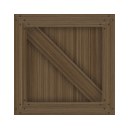

<nav class="navbar navbar-light bg-light shadow fixed-top">
  
  <span class="font-weight-bold">
    Sokoban
  </span>
  <span class="fill-remaining-space"></span>
  <div *ngFor="let entry of entries" class="nav-item">
    <a [routerLink]="entry.path"
      class="nav-link">
      {{ entry.title }}
    </a>
  </div>
</nav>
